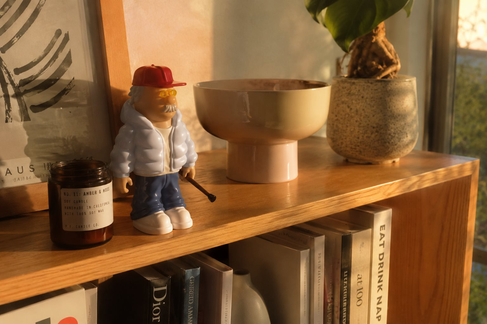
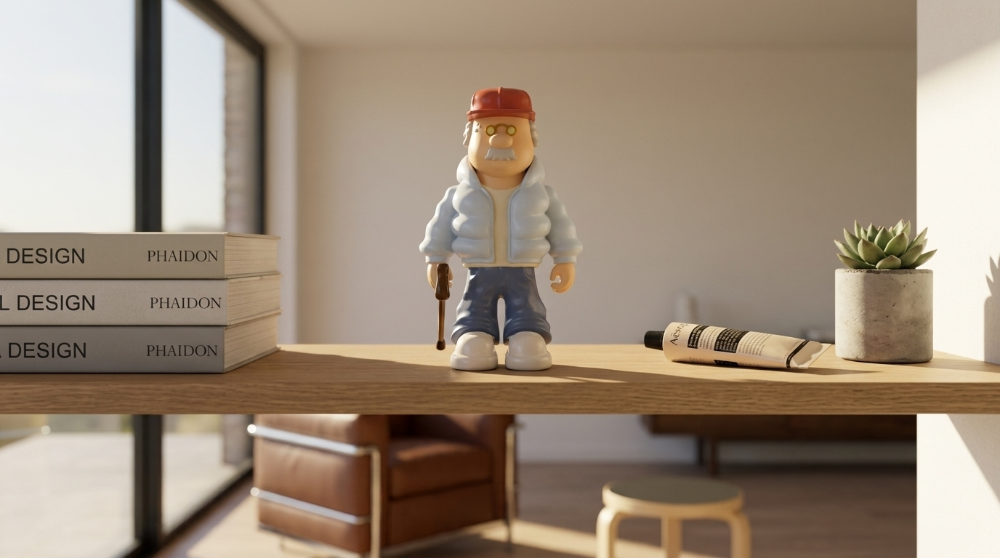
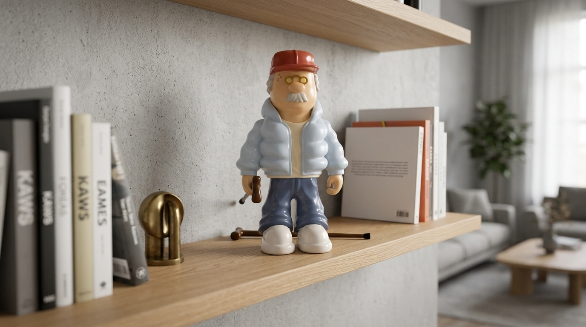
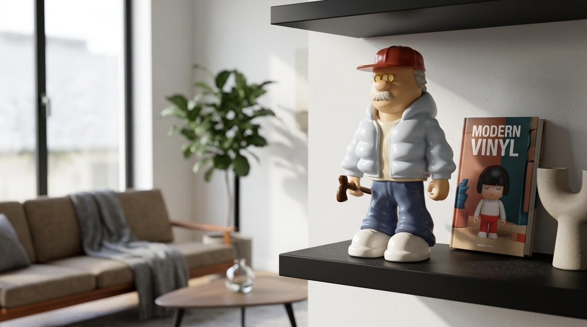

En su hábitat
Un objeto que habita
De la vitrina de museo a la estantería de casa: el GRMP convive con los grandes del coleccionismo y con la vida real.
 01 — MuseoLa vitrina
01 — MuseoLa vitrina

02 — CasaLuz de tarde
03 — EstudioEl escritorio
04 — LecturaEntre gigantes
05 — ColecciónVinilo moderno